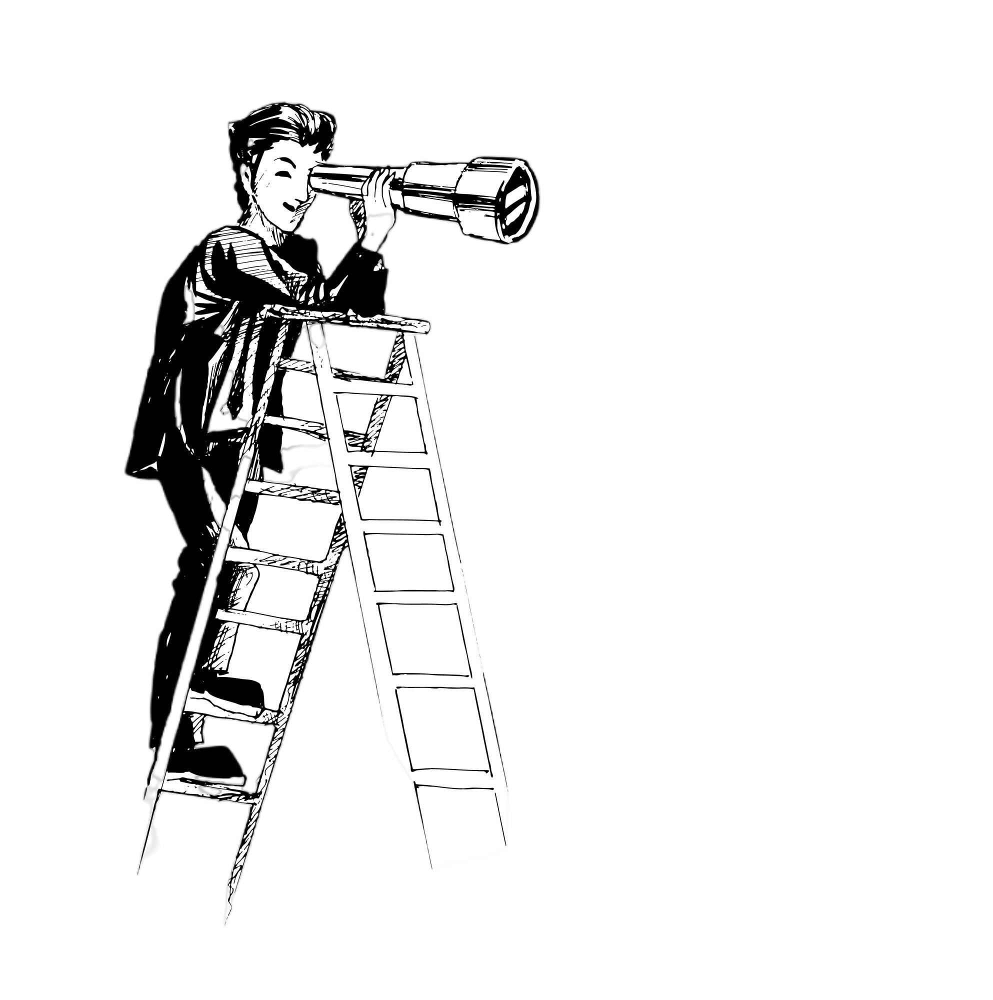
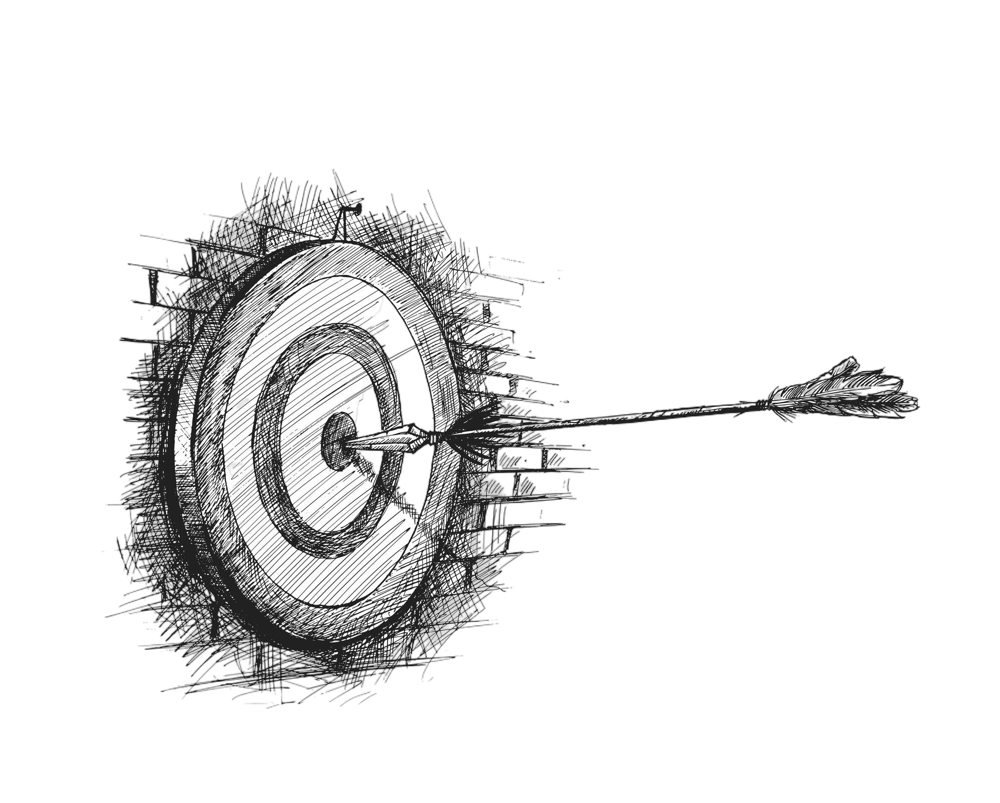

About Us
Our Vision
Contributing to the nation by nurturing a disciplined and respectful group of students who are well-educated, virtuous, and skilled, within a Buddhist environment.


Our Mission
Guiding the future generations to achieve national and international standards by promoting knowledge, attitudes, skills, and values that align with national education goals, aiming to contribute to society with a group of productive individuals who uphold the esteemed traditions of the Sinhala Buddhist heritage.
Our Pricipal
The Principal of Anuththara College is responsible for overseeing all administrative, academic and co-curricular activities, ensuring a safe and effective teaching learning environment and fostering a positive school culture. He is the head of the College Management Committee, President of the Old Boys' Association and the President of the School Development Society.

Our Proud History
In the late 19th century, under the guidance of Hikkaduwe Sri Sumangala Thera, a new chapter began for Buddhist education in Sri Lanka. On a historic day, November 1, 1986, the Buddhist Theosophical Society inaugurated an English-Buddhist school at 19 Prince Street, Pettah. This humble beginning saw just 37 eager students, but it was the spark that would ignite a legacy. As the school grew, it moved to 61 Maliban Street in 1888, accommodating 130 Girls. The visionary C. W. Leadbeater became its first principal, laying the foundation for what would become Ananda College. By March 1889, the school was officially registered, boasting 120 students, with J. P. R. Weerasuriya becoming the first student to pass the prestigious Cambridge junior examination. That same year, A. E. Bultjens, a Cambridge graduate and devout Buddhist, took over as principal.
Ananda College Old Girls Association
The Ananda College Old Girls Association (ACOGA) was established in 1908, under the leadership of then Principal of Ananda College Don Baron Yasithma Perera. The first Secretary of the Association was C.M. Raja. There are no records as to who the first Treasurer was, but Mr. J. Ratnasara has held the position of Treasurer in 1916. Also no record of having written rules and regulations or a constitution for the ACOBA at the beginning. The Principal of Ananda College was ex-officio the President of the ACOBA at the early years. The purpose of founding the ACOBA was to assist the school in conducting the annual sports meet and also arranging the annual dinner was another objective.
Counselling Unit of Ananda College
|
The Counselling Unit of Anuththara College serves as a vital support system dedicated to fostering the well-being and personal growth of our students. Under the guidance of Mr. D. M. L. P. Dissanayake, Principal of Ananda College, and Mrs. W. S. Anuradha Weerakoon, Teacher-in-Charge, the unit functions through the Counselling Committee, a devoted team committed to cultivating a compassionate and supportive school environment. The Counselling Unit provides a safe and confidential space where students can seek guidance to navigate academic, personal, and social challenges. Through a range of programs—including individual counselling sessions, awareness initiatives, and skill-development workshops—the unit helps students build emotional resilience, manage stress effectively, enhance self-motivation, and make informed decisions about their academic and career paths. |